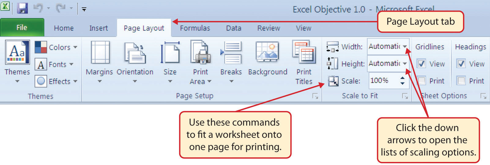
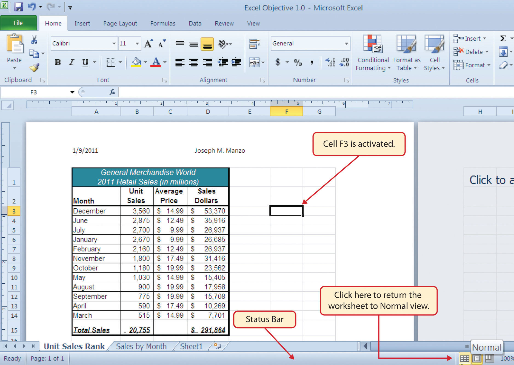
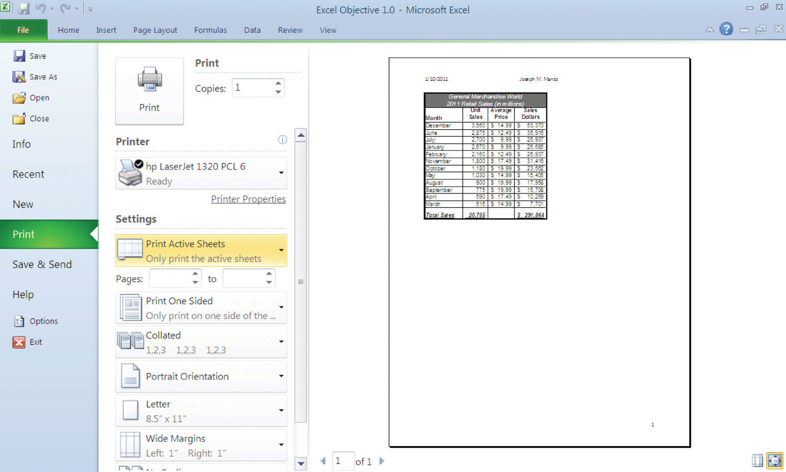

Once you have completed a workbook, it is good practice to select the appropriate settings for printing. These settings are in the Page Layout tab of the Ribbon and discussed in this section of the chapter.
Follow-along file: Excel Objective 1.0 (Use file Excel Objective 1.14 if you are starting with this skill.)
Before you can properly print the worksheets in a workbook, you must establish appropriate settings. The following steps explain several of the commands in the Page Layout tab of the Ribbon used to prepare a worksheet for printing:
Use Print Settings
Because professionals often share Excel workbooks, it is a good practice to select the appropriate print settings in the Page Layout tab even if you do not intend to print the worksheets in a workbook. It can be extremely frustrating for recipients of a workbook who wish to print your worksheets to find that the necessary print settings have not been selected. This may reflect poorly on your attention to detail, especially if the recipient of the workbook is your boss.
Figure 1.62 Page Layout Commands for Printing
Table 1.2 Printing Resources: Purpose and Use for Page Setup Commands
| Command | Purpose | Use |
|---|---|---|
| Margins | Sets the top, bottom, right, and left margin space for the printed document | 1. Click the Page Layout tab of the Ribbon. |
| 2. Click the Margin button. | ||
| 3. Click one of the preset margin options or click Custom Margins. | ||
| Orientation | Sets the orientation of the printed document to either portrait or landscape | 1. Click the Page Layout tab of the Ribbon. |
| 2. Click the Orientation button. | ||
| 3. Click one of the preset orientation options. | ||
| Size | Sets the paper size for the printed document | 1. Click the Page Layout tab of the Ribbon. |
| 2. Click the Size button. | ||
| 3. Click one of the preset paper size options or click More Paper Sizes. | ||
| Print Area | Used for printing only a specific area or range of cells on a worksheet | 1. Highlight the range of cells on a worksheet that you wish to print. |
| 2. Click the Page Layout tab of the Ribbon. | ||
| 3. Click the Print Area button. | ||
| 4. Click the Set Print Area option from the drop-down list. | ||
| Breaks | Allows you to manually set the page breaks on a worksheet | 1. Activate a cell on the worksheet where the page break should be placed. Breaks are created above and to the left of the activated cell. |
| 2. Click the Page Layout tab of the Ribbon. | ||
| 3. Click the Breaks button. | ||
| 4. Click the Insert Page Break option from the drop-down list. | ||
| Background | Adds a picture behind the cell locations in a worksheet | 1. Click the Page Layout tab of the Ribbon. |
| 2. Click the Background button. | ||
| 3. Select a picture stored on your computer or network. | ||
| Print Titles | Used when printing large data sets that are several pages long. This command will repeat the column headings at the top of each printed page. | 1. Click the Page Layout tab of the Ribbon. |
| 2. Click the Print Titles button. | ||
| 3. Click in the Rows to Repeat at Top input box in the Page Setup dialog box. | ||
| 4. Click any cell in the row that contains the column headings for your worksheet. | ||
| 5. Click the OK button at the bottom of the Page Setup dialog box. |
Follow-along file: Excel Objective 1.0 (Use file Excel Objective 1.15 if you are starting with this skill.)
When printing worksheets from Excel, it is common to add headersSpace at the top of a printed worksheet that contains information such as the date, page number, file name, company name, and so on. and footersSpace at the bottom of a printed worksheet that contains information such as the date, page number, file name, company name, and so on. to the printed document. Information in the header or footer could include the date, page number, file name, company name, and so on. The following steps explain how to add headers and footers to the Excel Objective 1.0 workbook:
Click the Header & Footer button in the Text group of commands. You will see the Design tab added to the Ribbon; this is used for creating the headers and footers for the printed worksheet. Also, this will convert the view of the worksheet from Normal to Page Layout (see Figure 1.63 "Design Tab for Creating Headers and Footers").
Figure 1.63 Design Tab for Creating Headers and Footers

Click the Normal view button in the lower right side of the Status Bar (see Figure 1.64 "Worksheet in Page Layout View").
Figure 1.64 Worksheet in Page Layout View
Follow-along file: Excel Objective 1.0 (Use file Excel Objective 1.16 if you are starting with this skill.)
Once you have established the print settings for the worksheets in a workbook and have added headers and footers, you are ready to print your worksheets. The following steps explain how to print the worksheets in the Excel Objective 1.0 workbook:
Click the Print option on the left side of the Backstage view (see Figure 1.65 "Print Preview"). On the right side of the Backstage view, you will be able to see a preview of your printed worksheet.
Figure 1.65 Print Preview
Which of the following commands is used to print the column headings in a worksheet at the top of each printed page for a worksheet that contains 100 rows of data?
Which of the following is true with respect to printing Excel worksheets?